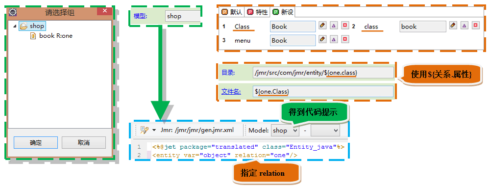
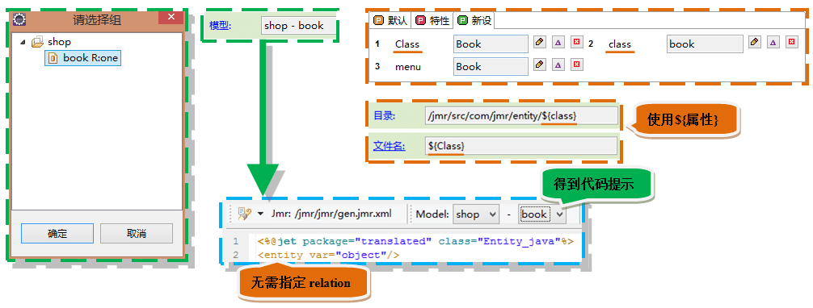

生成新增页面。
当前任务的模型组名称是shop，它包含一个java实体模型book，book的relation值是one； 我们在模板中会通过<entity>得到它。 关于本demo的模型结构，详细内容请点击：模型结构
有2种方式设置模型：


我们为这个模型新设了以下属性： Class：头字母大写的名称，可以作为类名或者需要头字母大写的部分，它的值是"Book"。 class：头字母小写的名称，可以作为头字母小写的部分，它的值是"book"。 menu：界面菜单栏的名称，它的值是"Book"。
逻辑：
--遍历字段，是可编辑字段才遍历
<table>
for field : object.fields object.isEdit
<tr>
--输出字段名
<th>field.name</th>
<td>
--如果字段的控件类型是文本
if field.controlType == text
--输出input控件
<input ...>
--如果字段的控件类型是下拉框
elseif field.controlType == select
--输出select控件
<select ...>
--遍历字段的data
for data : field.datas
--选项的值为data.value，选项名为data.name
<option value="data.value"/>data.name</option>
</select ...>
--如果字段的控件类型是日期
elseif field.controlType == date
--输出日期控件
<input class="Wdate"...>
</td>
</tr>
</table>
field.property("isEdit") == true判断字段是否可编辑，可编辑的字段才需要填写内容，id作为主键，不需要显示在列表中。
运行结果
类似地，可以生成验证清楚和返回的javascript。
运行结果